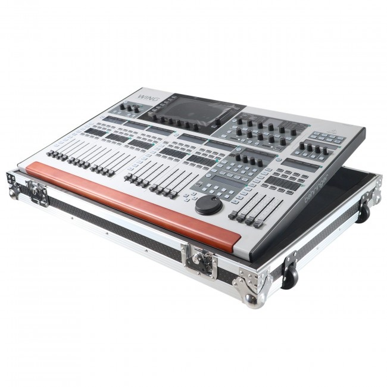
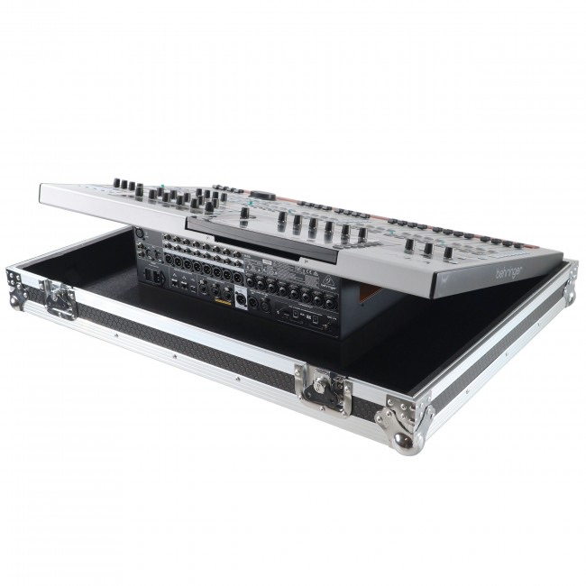

Flight case
ProX XS-BWING W Ordered $444.95 · SweetwaterAbout 37″ × 26.5″ × 12″ and 45 lb empty, on four casters, two locking. No doghouse: lighter and smaller, and the cables come off for transport. It fits our WING: Behringer documents the WING-BK as the same console as the original WING in a different color.